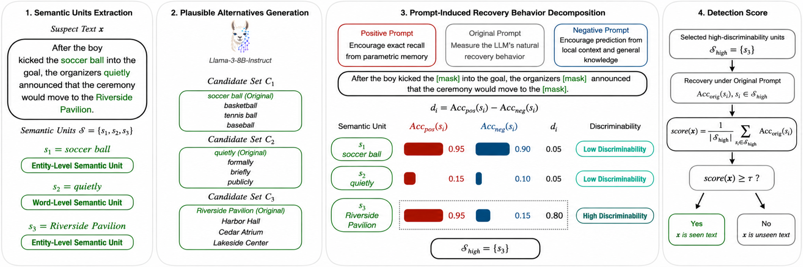
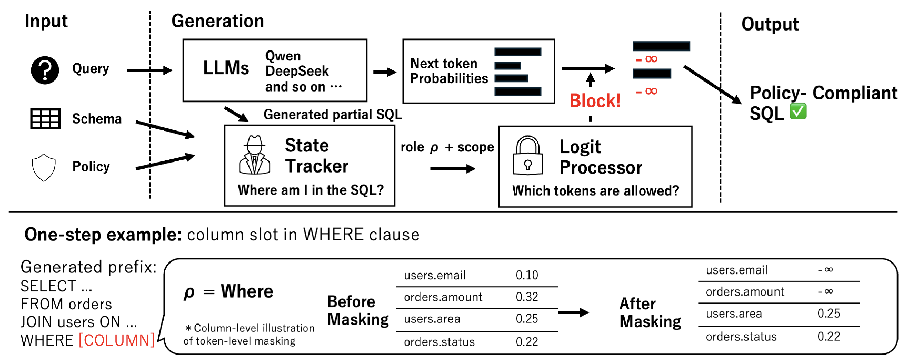
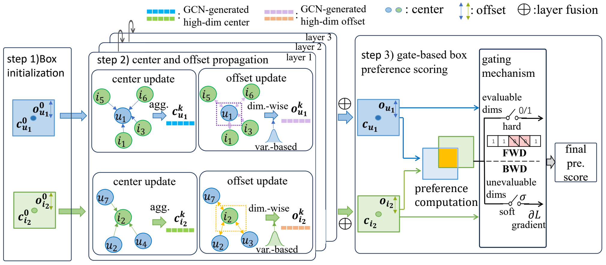
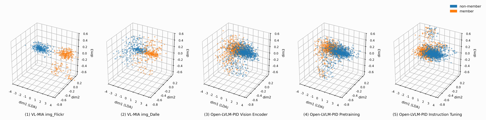
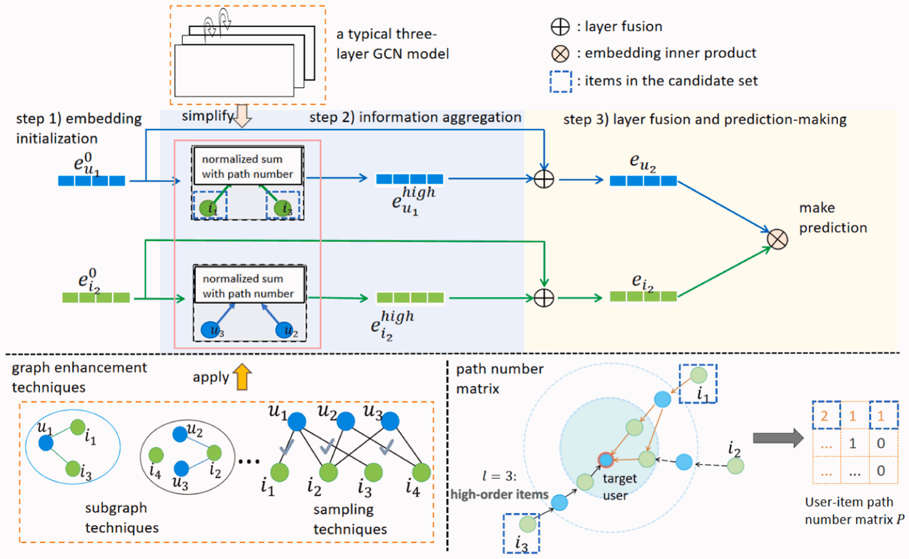
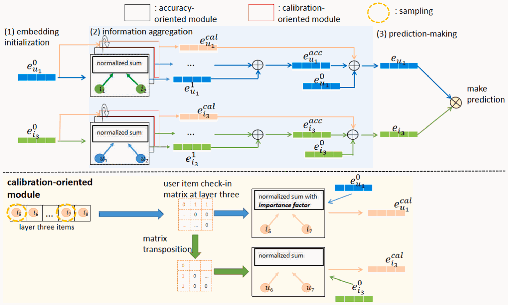

{kind=link}
{kind=link}
{kind=link}
{kind=link}
{kind=link}
{kind=link}
Waseda University, Tokyo, Japan
Apr. 2024 – Present
Doctoral Program, Computer Science and Communications Engineering
Graduate School of Fundamental Science and Engineering
Expected completion: March 2027
I am a PhD student at Waseda University’s Graduate School of Fundamental Science and Engineering, working in Yamana Laboratory under the supervision of Prof. Hayato Yamana.
My research centers on large language models.
* Equal contribution. Conference ranks: CORE / ICORE 2026. Journal Impact Factors: 2025 JIF.

Conference on Empirical Methods in Natural Language Processing (EMNLP), October 2026 Accepted / To appear

Neural Networks, July 2026

International Conference on Neural Information Processing (ICONIP), November 2025

Conference of the Asia-Pacific Chapter of the Association for Computational Linguistics and International Joint Conference on Natural Language Processing (AACL-IJCNLP), November 2026 Accepted / To appear

ACM Conference on Recommender Systems (RecSys), September–October 2026 Accepted / To appear

IEEE/CVF Winter Conference on Applications of Computer Vision (WACV), March 2026

Pattern Recognition, November 2025

International ACM SIGIR Conference on Information Retrieval in the Asia Pacific (SIGIR-AP), December 2024

Neurocomputing, February 2024
Apr. 2024 – Present
Doctoral Program, Computer Science and Communications Engineering
Graduate School of Fundamental Science and Engineering
Expected completion: March 2027
Apr. 2022 – Mar. 2024
Master’s Program, Computer Science and Communications Engineering
Graduate School of Fundamental Science and Engineering
Apr. 2024 – Mar. 2025
Research Assistant
Research on copyright infringement issues in large language models.
Apr. 2023 – Present
Research Internship
Research and development on large language models.
At NTCIR-18 U4, we contributed to a framework for table retrieval and question answering over Japanese financial reports, ranking second in both tasks.
2024 – 2027
Doctoral research support through Waseda University’s W-SPRING program.
2026 – 2027
Research support from the Waseda Research Institute for Science and Engineering and KIOXIA Corporation.
2026 – 2027
Supporting Pioneering Research through AI for 1,000 Discovery challenges.